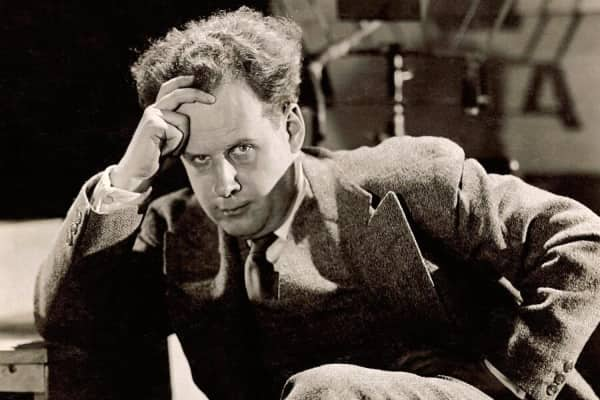

Сергей Эйзенштейн
Теоретик и практик монтажа
Ввел понятие «монтажа аттракционов», где каждый кадр служит для эмоционального удара по зрителю. Его работы стали фундаментом мирового киноязыка.
Прославившая работа: «Броненосец Потёмкин» (1925)
Всего работ: 7 полнометражных фильмов